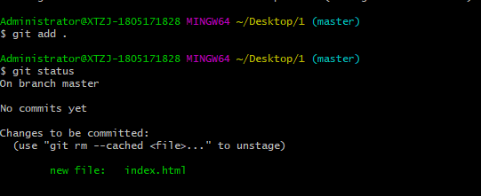
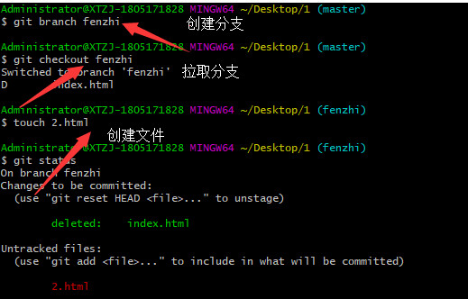

官网下载地址：[https://git-scm.com/downloads]
（1）git --version(查看git版本)
（2）git --help(辅助命令查看)
（3） git config --global user.Licheng（名字）
git config --global email.12345678@qq.com(邮箱)
配置个人信息方便操作时，记录由谁做的提交，谁做的修改等信息查询。
（5）git init (连接仓库)
（6）git status（查看文件状态）
红色修改后没有提交，绿色即为提交。
（6）4. git add + . （提交到暂存区）

（7）5. git comit git commit –m ‘frist commit’ （提交 ）
git commit –am ‘ 提交备注’ 跳过暂存区一次性提交
git commit –amend 取消上次一 提交
（8）git log （查看提交信息）
（9）git rm + 文件名 （文件删除）
（10）分支操作（有力于协同开发，防止个人开发对主线造成的影响）
1、git branch + 分支名
2、git checkout + 分支名 （拉取分支）
3、touch + 文件名

（11）分支主线合并
1、先回到主线。
2、Git merge + 分支名字
**最后一步就是提交到远程仓库啦，这个的需要你在github创建仓库，然后找到地址进行提交。具体操作自行百度吧！**
以上水平有限，有错误欢迎指出！！！！！